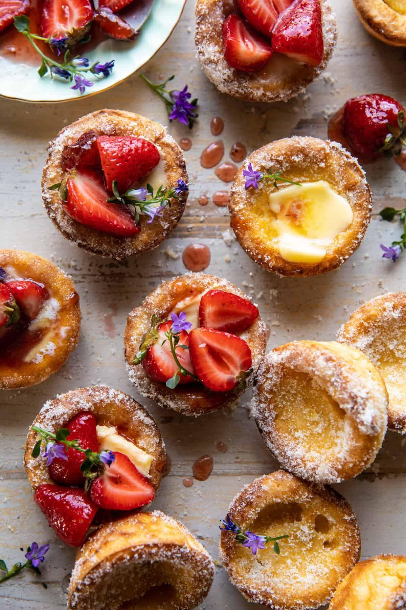

-

Strawberry Popovers
Ingredients
- Butter - 3 tablespoons (Melted)
- Milk - 1 Cup
- Eggs - 3
- White Sugar - 1/4 Cup
- Vanilla Extract - 1 teaspoon
- Flour - 1 cup
- Fresh Strawberries - ½ cup( Diced)
- White Sugar - 1 tablespoon
- Cinnamon - 1 tablespoon
- White Sugar - 1/4 Cup
- Lemon - 1, halved
Method of Preparation
Preheat oven to 375°F. In a bowl, mix milk, eggs, sugar and vanilla extract. Add flour and mix.
In 6 muffin cups, place butter. Scoop in 1 spoon of the batter. Do not mix. Add strawberries.
In another bowl, mix sugar and cinnamon. Drizzle on batter and bake for 5 minutes
Sprinkle sugar when done and press the juice of a lemon over it.